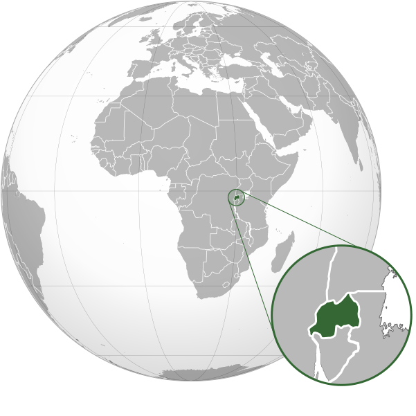

RWANDA COUNTRY SPOTLIGHT
Improving quality, access, and equity for vulnerable communities in Rwanda’s health, education, and social protection systems
 Buddu Coffee
Buddu Coffee
Over the past decade, Rwanda has made considerable progress in improving access to healthcare, education, and social protection for vulnerable communities. However, the country still faces barriers to ensuring all vulnerable children, youth, women, and elderly people receive high‑quality support services – including low school enrollment rates in rural areas, limited child protection coverage, and gaps in data on the needs of marginalized groups and the effectiveness of social service systems.

Our Partnerships
A digital solution to support cost‑effective improvements in the quality of care for vulnerable families.
EKFcharity is partnering with the Rwanda Ministry of Health (RBC – Rwanda Biomedical Centre) to test how GROW could support government health and social protection priorities, which include using digital tools to improve service quality and efficiency in public spending. In 2022, EKFcharity launched an operational study in partnership with the Rwanda Biomedical Centre and the University of Rwanda’s School of Public Health to assess the feasibility and acceptability of GROW for vulnerable families and frontline community workers, and what contextual adaptations would be needed to meet their needs in education, child protection, and health. With a successful operational study, our aim is that the Ministry of Health and the Ministry of Gender and Family Promotion scale the program nationally, in partnership with other service delivery providers.
What we are learning in Eastern Province, Rwanda
Our operational study, taking place in Eastern Province, Rwanda, will test the feasibility of GROW to support vulnerable families – including children, youth, women, and elderly people – and answer critical questions about how our technology can be quickly and cost‑effectively replicated in new geographies.
- Translating content to new languages (Kinyarwanda, French, and local dialects)
- Adaptations to reach low‑literacy vulnerable families with essential information on health, education, and child protection

Impact Reports
You can find our quarterly and annual impact reports below, or sign up to receive these straight into your inbox.